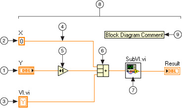
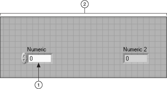
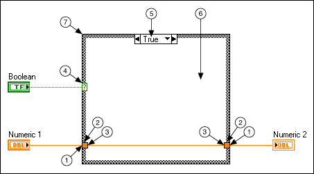
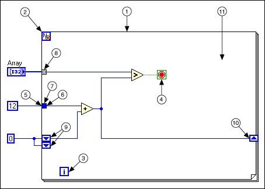
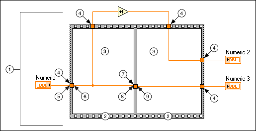

Open example�
Open example�
In order to create or modify a VI using VI Scripting, you must understand how the objects that compose a VI relate both to the VI Server class hierarchy and to nearby objects. This topic presents the following three essential types of information about several common VI objects in order to facilitate a variety of use cases.
The following image illustrates several common block diagram objects you can create or modify with VI Scripting.
|
 |
||
| 1 Control/Indicator Terminal | 4 Wire | 7 SubVI |
| 2 Numeric Constant | 5 Increment Function | 8 Top Level Diagram |
| 3 Local Variable | 6 Compound Arithmetic Function | 9 Block Diagram Comment |
The following table lists the classes and properties you can use to obtain references to the objects in the previous image.
| Class Hierarchy | Returns the Object Reference | |
| 1 | GObject�Terminal�ControlTerminal | Control:Terminal, Diagram:All Objects[] |
| 2 | GObject�Constant�NumericConstant | Diagram:All Objects[] |
| 3 | GObject�Node�Local | Control:Local Variables[] |
| 4 | GObject�Wire | Terminal:Connected Wire, Diagram:Wires[] |
| 5 | GObject�Node�Function | Diagram:Nodes[], Diagram:All Objects[] |
| 6 | GObject�Node�GrowableFunction�CompoundArithmetic | Diagram:Nodes[], Diagram:All Objects[] |
| 7 | GObject�Node�SubVI | Diagram:SubVIs[], Diagram:Nodes[], Diagram:All Objects[] |
| 8 | GObject�AbstractDiagram�Diagram�TopLevelDiagram | VI:Block Diagram |
| 9 | GObject�Decoration�Text | Diagram:Decorations[], Diagram:All Objects[] |
The following image illustrates some common front panel objects.
|
 |
|
| 1 Control/Indicator | 2 Front Panel |
The following table lists the classes and properties you can use to obtain references to the objects in the previous image.
| Class Hierarchy | Returns the Object Reference | |
| 1 | GObject�Control�Numeric | Panel:Controls[], ControlTerminal:Control |
| 2 | GObject�Panel | VI:Front Panel |
The following image illustrates the various objects that compose a Case structure.
|
 |
||
| 1 Terminal | 4 Selector Tunnel | 7 Case Structure |
| 2 Tunnel | 5 Selector Label | |
| 3 Inner Terminal | 6 Diagram | |
The following table lists the classes and properties you can use to obtain references to the objects in the previous image.
| Class Hierarchy | Returns the Object Reference | |
| 1 | GObject�Terminal�OuterTerminal | Tunnel:Outside Terminal |
| 2 | GObject�Tunnel | Structure:Tunnels[] |
| 3 | GObject�Terminal�InnerTerminal | Tunnel:Inside Terminals[] |
| 4 | GObject�Tunnel�ConditionalTunnel�SelectorTunnel | Structure:Tunnels[], CaseStructure:Selector |
| 5 | N/A | CaseStructure:Frame Names* |
| 6 | GObject�AbstractDiagram�Diagram | Structure:Diagrams[], MultiFrameStructure:Frames[] |
| 7 | GObject�Node�Structure�MultiFrameStructure�CaseStructure | Diagram:All Objects[], Diagram:Nodes[] |
* LabVIEW does not provide a reference to the selector label in a Case structure. The CaseStructure:Frame Names property returns an array of strings rather than an array of references to the diagrams associated with different cases. You can use these name strings with the CaseStructure:Get Frame Index method to obtain indexes to specific diagrams within the array returned by the MultiFrameStructure:Frames[] property.
The Structures - Case Structure VI demonstrates how to use VI Scripting to access parts of the Case structure anatomy.
Open example�
The following image illustrates the various objects that compose a For Loop.
|
 |
||
| 1 For Loop | 5 Outer Terminal | 9 Left Shift Register |
| 2 Count Terminal (N) | 6 Inner Terminal | 10 Right Shift Register |
| 3 Terminal (i) | 7 Loop Tunnel | 11 Diagram |
| 4 Conditional Terminal | 8 Auto-indexing Loop Tunnel | |
The following table lists the classes and properties you can use to obtain references to the objects in the previous image.
| Class Hierarchy | Returns the Object Reference | |
| 1 | GObject�Node�Structure�Loop�ForLoop | Diagram:All Objects[], Diagram:Nodes[] |
| 2 | GObject�Tunnel | ForLoop:Loop Count |
| 3 | GObject�Terminal | Loop:Loop Counter |
| 4 | GObject�Terminal | ForLoop:Loop End Ref |
| 5 | GObject�Terminal�OuterTerminal | Tunnel:Outside Terminal |
| 6 | GObject�Terminal�InnerTerminal | Tunnel:Inside Terminals[] |
| 7 | GObject�Tunnel�LoopTunnel | Structure:Tunnels[] |
| 8 | GObject�Tunnel�LoopTunnel | Structure:Tunnels[], LoopTunnel:Index Mode = 1 (for Auto-indexing) |
| 9 | GObject�Tunnel�LeftShiftRegister | RightShiftRegister:Left Registers[] |
| 10 | GObject�Tunnel�RightShiftRegister | Loop:Shift Registers[], LeftShiftRegister:Right Shift Register |
| 11 | GObject�AbstractDiagram�Diagram | Loop:Diagram, Structure:Diagrams[] |
The Structures - For Loop VI demonstrates how to use VI Scripting to access parts of the For Loop anatomy.
Open example�
 |
Note��In Flat Sequence structures, you can wire out of the structure from one frame and back into the structure through another frame. This type of data flow distinguishes the Flat Sequence structure from other structures, so that all the VI Server classes are different for the Flat Sequence structure. |
The following image illustrates the various objects that compose a Flat Sequence structure.
|
 |
||
| 1 Flat Sequence | 4 Flat Sequence Outer Tunnel | 7 Flat Sequence Inner Tunnel |
| 2 Flat Sequence Frame | 5 Flat Sequence Outer Terminal (of Outer Tunnel) | 8 Flat Sequence Left Terminal (of Inner Tunnel) |
| 3 Diagram | 6 Flat Sequence Inner Terminal (of Outer Tunnel) | 9 Flat Sequence Right Terminal (of Inner Tunnel) |
The following table lists the classes and properties you can use to obtain references to the objects in the previous image.
| Class Hierarchy | Returns the Object Reference | |
| 1 | GObject�FlatSequence | Diagram:All Objects[] |
| 2 | Generic�FlatSequenceFrame | FlatSequence:Frames[], Diagram:Firing Order[], FlatSequenceOuterTunnel:Frame, FlatSequenceInnerTunnel:Left Frame, FlatSequenceInnerTunnel:Right Frame |
| 3 | GObject�AbstractDiagram�Diagram | FlatSequenceFrame:Diagram |
| 4 | GObject�FlatSequenceOuterTunnel | FlatSequenceFrame:Outer Tunnels[] |
| 5 | GObject�Terminal | FlatSequence:Terminals[], FlatSequenceOuterTunnel:Outer Terminal |
| 6 | GObject�Terminal | FlatSequenceOuterTunnel:Inner Terminal |
| 7 | GObject�FlatSequenceInnerTunnel | FlatSequenceFrame:Left Side Inner Tunnels[], FlatSequenceFrame:Right Side Inner Tunnels[] |
| 8 | GObject�Terminal | FlatSequenceInnerTunnel:Left Terminal |
| 9 | GObject�Terminal | FlatSequenceInnerTunnel:Right Terminal |
The Structures - Flat Sequence Structure VI demonstrates how to use VI Scripting to access parts of the Flat Sequence Structure anatomy.
Open example�
This topic highlights some of the most common VI objects. For information about objects not addressed here, consult the following resources: